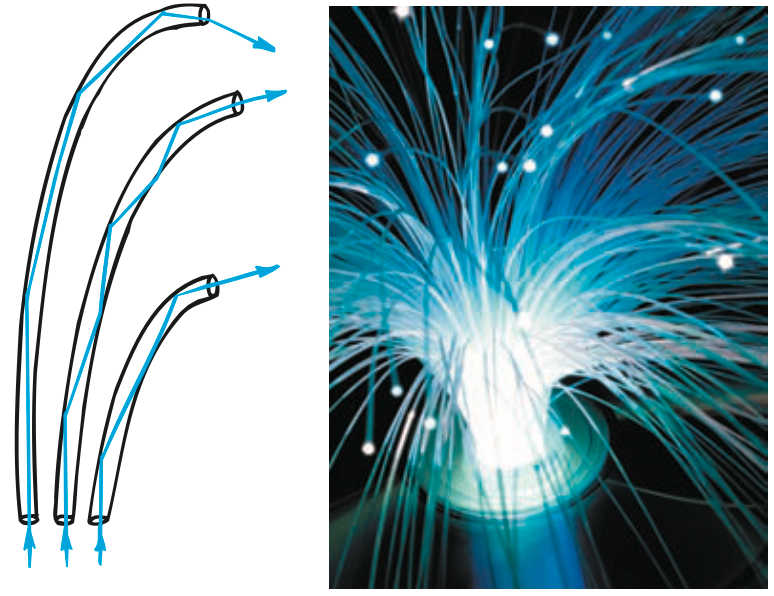

1. Which light interaction is most important in a camera lens?
2. Where should the eye’s optical system bring rays from a viewed object to focus?
3. In a fiber, does the guided ray curve continuously or travel in segments between boundary interactions?
4. Name the optical effect responsible for separating colors in a rainbow or prism.
5. Give one example of evidence that could falsify an optical-device explanation.
6. Use the fiber figure to trace one guided ray and name the boundary condition that keeps it from escaping the core.

7. A farsighted eye needs incoming rays to begin converging sooner. Explain why a converging corrective lens can provide that change.
8. Compare a camera and the human eye: identify one optical similarity and one important difference in where the focused image is received.
9. A prism pair redirects a ray inside glass. Explain how total internal reflection can turn the path with little transmission through the reflecting face.
10. A coating passes 92% of visible light at one wavelength but only 70% at another. Explain why one “high transmission” number is not enough to characterize the device.
11. A website says an optical fiber has zero loss no matter how tightly it bends. Evaluate the claim using critical angle and changing incidence angle.
12. A display window looks clear from straight ahead but produces strong reflections from the side. Explain why this does not contradict the first observation and what variable changed.
13. A camera’s focusing element relies most directly on
14. A farsighted correction often uses a converging lens because the added lens
15. Why does light usually remain inside a properly designed fiber core?
16. A road mirage and a bent-straw illusion share which basic cause?
17. A prism and a rainbow both demonstrate
18. Which evidence would best weaken a claim that a window coating is “reflection-free from every direction”?
19. A camera and an eye are alike because each
20. Different colors focusing at different distances through one lens is an example of